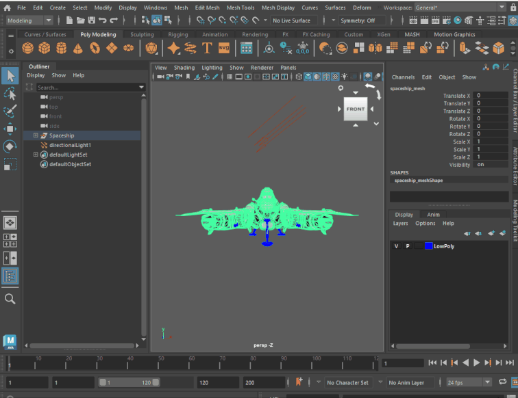
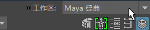

工作区是窗口、面板和其他界面选项的布局。有预设的“工厂”工作区，包括“常规”(General)（默认），以及为不同工作流设计的其他几个工作区。您还可以创建和共享自定义工作区。

“工作区”(Workspace)下拉菜单位于 Maya 界面的右上角
您可以修改当前工作区，方法包括：打开、关闭和移动窗口、面板和其他 UI 元素，以及停靠和取消停靠窗口和面板。
您不需要将更改保存到工作区。切换到其他工作区或关闭 Maya 时，您所做的更改将自动保存。并在下次切换回该工作区或重新启动 Maya 时还原。
- 对预定义工作区所做的更改将以覆盖的形式保存。您可以通过以下方式随时还原工作区的原始配置：切换到工作区，然后选择（或者，从“工作区”(Workspace)下拉菜单中选择“重置当前工作空间”(Reset Current Workspace)）。
- 仅保存对自定义工作区所做的更改。如果已进行更改，但尚未切换到其他工作区或关闭 Maya，则可以按照与还原覆盖更改相同的方式还原所做的更改。
与旧版面板布局(panel layout)功能相比，通过工作区可以更灵活地自定义界面。特别是，工作区可用于将面板移动和停靠到任何位置，而面板布局仅控制视图面板(View panel)中的排列。另一个区别就是，工作区将自动作为单独的文件存储到用户目录中并持续存在，而面板布局则存储在场景文件中。
切换工作空间
请执行下列任一操作：
- 从主菜单栏最右侧的“工作区”(Workspace)选择器中，选择一个项目。

- 从菜单中选择一个项目。
锁定工作空间
锁定当前工作区，以防止关闭或移动组件。这有助于避免意外移动界面。
锁定当前工作区
- 单击“工作区”(Workspaces)下拉菜单旁边的锁定图标 (
 )。锁定时，该图标将亮显。
)。锁定时，该图标将亮显。
再次单击该图标以解除锁定工作区。
注： 锁定时，您仍然可以调整大小或收拢选项卡。